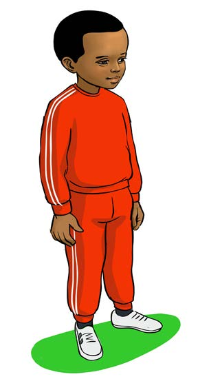
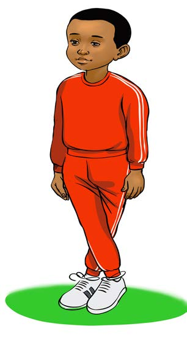

Grapevine steps
This exercise builds body balance. It also prepares you to participate in various sports and tasks at school and at home.
Steps to be followed
1.
Exercise to prepare your body.
2.
Stand straight and cross your legs.


Figure 5: A pupil standing upright and then crossing his legs
3.
With the legs crossed, take five steps forward, backward, right and left.